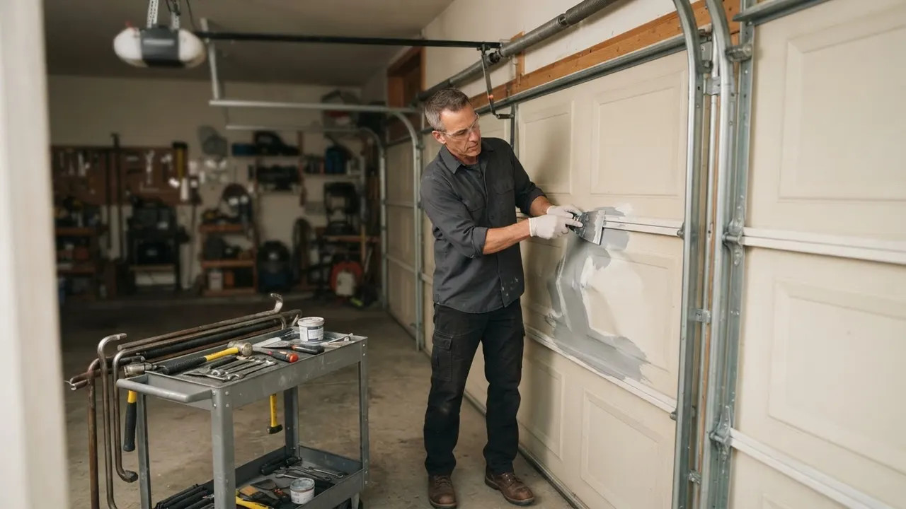

Garage Door Weather Stripping & Sealing
Garage Door Weather Stripping Wilmington DE That Stops Drafts Cold
Garage Door Weather Stripping Wilmington DE is the fastest fix for a drafty, wet, or noisy garage. We replace worn bottom seals, perimeter stripping, and threshold seals on every door brand, usually in a single visit. If your garage smells like outside or your energy bill jumped, call us today.
Service overview
Garage Door Weather Stripping Wilmington DE Done Right
Garage Door Weather Stripping Wilmington DE is the rubber, vinyl, or brush material that closes the gaps between your door and the frame, floor, and jambs. Over time UV light, road salt, and freeze-thaw cycles crack that material, letting in cold air, water, insects, and road grit. We remove the old seal, clean the channel, and install new stripping cut to your exact door width.
Wilmington garages take a beating. Winter winds off the Christina River push cold air through any gap, and summer humidity warps cheap seals fast. Homeowners in Trolley Square and the Highlands often call us after finding puddles near the garage wall or hearing the door rattle in a storm. If you have been searching for garage door weather stripping Wilmington DE near me, we can be at your door the same day.

Practical benefits
Why Wilmington Homeowners Seal Their Garage Doors
A sealed garage door protects your car, your tools, and your home's air quality. Here is what a proper seal actually delivers.
Lower Energy Bills
A gap the width of a pencil lets cold air pour into any room above or beside the garage. Sealing that gap can cut heating loss noticeably in a Wilmington winter. Customers in Brandywine Village often tell us their upstairs bedroom finally feels warm after we install new garage door weather seal Wilmington DE.
No More Water Damage
Rain driven sideways by nor'easters pushes under an unsealed door and soaks drywall, cardboard boxes, and stored furniture. A new bottom seal with a proper floor contact stops that water at the threshold. We have dried out basements in Southbridge that flooded for years because of one worn seal.
Fewer Pests Indoors
Mice, spiders, and ants use a quarter-inch gap like an open door. Sealing the perimeter closes that highway. If you have been fighting pests in your garage, garage door sealing in Wilmington, Delaware is often the missing piece your exterminator never mentioned.
Quieter Door Operation
Loose or missing stripping lets the door slap and rattle against the frame every time it moves. New stripping cushions that contact and quiets the whole cycle. Pair it with new nylon rollers and you will barely hear the door from inside the house.
How service works
How Our Sealing Process Works
We keep it simple. You call, we inspect, we quote, we seal, and we test the door before we leave. Most jobs finish in under two hours.
STEP 01
Phone Assessment
Call (302) 556-5080 and describe what you are seeing: water on the floor, daylight under the door, or a draft you can feel. We ask about your door brand and width so the truck arrives with the right material. Most Wilmington calls get a same-day window.
Tools and methods
Tools and Methods We Use
Tape measure and level
We measure door width to the quarter inch and check the floor line for slope. That tells us whether a standard bottom seal will work or if a threshold seal is needed.
Power drill and socket wrench set
Used to remove and refit retainer brackets and track hardware. A cordless drill speeds up the job and lets us work cleanly in tight garage corners.
Rubber mallet
Seats new stripping into the retainer without tearing the material. A mallet gives even pressure along the full length of the seal.
Vise grips and C-clamps
Hold the door or track steady while we work on seals near the bottom corners. They keep the door from shifting and protect your fingers.
Safety glasses and gloves
Standard on every job. Old stripping can hide sharp metal edges and debris, so we protect our eyes and hands before we start pulling material.
DASMA-rated seal material
We stock vinyl, EPDM rubber, and brush seals that meet DASMA standards for weather resistance. The right material for your door type is what makes the seal last.
Full perimeter inspection
We check all four sides of the door, not just the bottom. Side and top seals fail too, and replacing only the bottom often leaves drafts you can still feel. This method catches every gap in one visit.
Material matching by door type
A wood door, a steel Clopay door, and a Wayne Dalton door each take a different seal profile. We match the material to the retainer and the door weight so the seal stays put through thousands of cycles.
Down-limit adjustment
After sealing, we adjust the opener down-limit so the door presses the seal firmly without crushing it. This step is what keeps the seal working long after we leave.
UL 325 safety verification
Every job ends with a safety reverse test per UL 325. If the door does not reverse on contact, we adjust it before we call the job done. Safety and sealing go together.

Where this service fits
When Wilmington Homeowners Call Us for Sealing
A homeowner in Cool Spring notices daylight under the garage door and a cold draft in the hallway above it.
We inspect the bottom seal and find it flattened and cracked from years of freeze-thaw cycles. We replace the bottom seal and both jamb strips in about 90 minutes. The draft is gone, the hallway stays warm, and the door closes with a solid thud instead of a rattle.
After a nor'easter, a family in Southbridge finds water running across the garage floor toward the house door.
We install a new bottom seal and a threshold seal to bridge the low spot in the concrete. We also check the track to confirm the door closes evenly. The next storm leaves the garage dry, and stored boxes and tools stay off the floor for good.
A homeowner in Pettinaro is selling their house and the home inspector flags a worn garage door seal.
We replace the bottom seal and perimeter stripping and provide a clean receipt for the closing paperwork. The job takes under two hours. The inspection item is cleared, and the buyer sees a garage that is sealed and ready for winter.
A business owner near the Riverfront has a loading door that lets in cold air and rain during deliveries.
We install heavy-duty commercial bottom seals rated for daily traffic and reinforce the perimeter stripping. We schedule the work outside business hours. The dock stays dry, the warehouse holds heat better, and employees stop complaining about the draft.
Local execution
How Garage Door Sealing Works in Wilmington
Wilmington sits in a climate that swings hard. Summer humidity warps cheap seals, and winter freeze-thaw cycles crack them from the inside. Add road salt from I-95 and Route 202, and a bottom seal that would last five years in a milder climate may fail in three here. Older garages in neighborhoods like Trinity Vicinity and Hedgeville often have settled concrete floors, which means a standard bottom seal will not make full contact. We solve that with a threshold seal that bridges the low spots. If you have been searching for same day garage door weather stripping Wilmington DE, we keep common seal sizes on the truck so we can finish the job in one visit. We also check that your opener down-limit is set correctly, because a door that stops an inch high will never seal no matter how good the stripping is.
Trinity Vicinity
Many garages here are detached and unheated, so seals face full winter exposure. We use heavier material on these doors to handle the wind.
Hedgeville
Older concrete floors in this area often slope toward the street. A threshold seal is usually the right fix instead of a standard bottom seal.
Riverfront
River-adjacent humidity speeds up seal rot. We recommend EPDM rubber here because it resists moisture better than vinyl.
Forty Acres
Attached garages here often share a wall with living space, so a bad seal means cold air directly into the house. Sealing pays off fast.
Freeze-thaw cycles from December through March
Water gets into small cracks, freezes, and expands them. Seals that look fine in fall can be split by spring. We check for this pattern on every winter call.
Road salt spray from nearby highways
Salt dries out rubber and speeds cracking. We recommend EPDM or a salt-resistant vinyl on doors facing the street.
Summer humidity and afternoon thunderstorms
High humidity warps low-grade seals and lets water push under the door during quick storms. A proper threshold seal handles both.
Older settled concrete in historic neighborhoods
Uneven floors mean a standard seal leaves gaps. We measure the slope and fit a threshold seal to close it.
Problems we solve
Problems Garage Door Sealing in Wilmington Solves
Most sealing calls come down to one of these issues. If any of them sound familiar, a new seal is likely the fix.
Cold drafts and high heating bills
We install a new bottom seal and perimeter stripping that closes every gap. Most customers notice warmer floors and lower heating use within the first cold snap after the work. A gap under the door lets heated air escape all winter, and your furnace works harder to keep up. You feel it most in rooms above or beside the garage.
Water pooling inside the garage
We replace the bottom seal and add a threshold seal if the floor is uneven. That combination stops wind-driven rain at the door line before it reaches your stored belongings. Standing water rots drywall, ruins stored items, and can seep into the house. It also rusts tools and promotes mold growth in a closed garage.
Pests getting into the garage
We seal the full perimeter, including the corners where pests usually slip through. Pairing this with a garage door drafty weather stripping Wilmington DE repair closes the entry points your pest control tech cannot reach. Mice, ants, and spiders use small gaps as entry points. Once inside, they move into wall cavities and eventually into the house.
Noisy, rattling door operation
New stripping cushions the door against the frame and quiets the cycle. If rollers are also worn, we replace them during the same visit so the door runs smooth and quiet. A door that slaps against the frame is annoying and signals worn or missing stripping. Over time the vibration loosens hinges and track brackets.


A practical standard for every visit.
Clear planningPrepared arrivalsCareful workLocal follow-through
Experience in the details
16 Years Sealing Delaware Garage Doors
Delaware Express Garage Door Service has been sealing garage doors since 2010, and 16 years in New Castle County teaches you what lasts. We have worked on Clopay, Amarr, Wayne Dalton, and older wood doors all over Wilmington. Our techs know which seal material survives a Delaware winter and which one fails by February. We stock DASMA-rated stripping on every truck so we rarely need a second trip. That is the difference between a patch and a permanent fix.

Where we work
One local team. A lot of ground covered.
Downtown WilmingtonRiverfrontThe HighlandsTrolley SquareForty AcresBaynard VillageWawaset ParkCool SpringTrinity VicinityBrowntownLittle ItalyUnion Park Gardens
Check my address Notes from local customers
What Wilmington Customers Say
Our garage flooded every time it rained hard, and we could not figure out why. The tech found the bottom seal was completely shot and replaced it in about an hour. No water since, even after that big storm in October. Fair price, showed up when they said, and cleaned up after themselves.
I could feel cold air pouring in from the garage all winter. They sealed the bottom and both sides and the difference was immediate. My upstairs bedroom stays warm now and the door is way quieter. Should have done this years ago.
We had mice getting into the garage and could not figure out how. Turns out the side stripping had a gap near the bottom corner. They sealed it and we have not seen a mouse since. Quick, professional, and they explained everything they were doing.
Before the visit
Common Questions About Garage Door Sealing in Wilmington
Still wondering?(302) 556-5080
Most residential sealing jobs in Wilmington run $150 to $450 in 2026, depending on door width and how many sides need new material. A single bottom seal on a one-car door sits at the low end. Full perimeter sealing on a two-car door with a threshold seal lands near the top. We quote the exact price on site before any work begins.
Three signs mean it is time: you can see daylight under the closed door, water pools near the threshold after rain, or you feel cold air along the jamb in winter. Run your hand along the bottom seal. If it is cracked, flattened, or missing chunks, it is done. Delaware freeze-thaw cycles wear seals out every three to five years.
For most Wilmington homes, a vinyl or EPDM rubber bottom seal with a bulb shape gives the best floor contact and survives winter salt and summer heat. Brush seals work well on the sides where the door slides. We match the material to your door type and climate exposure, so you are not replacing it again next year.
Delaware Express Garage Door Service installs garage door weather stripping across Wilmington and New Castle County. We are based locally, so we are not driving in from out of state. Call (302) 556-5080 and we will schedule a same-day or next-day visit. We serve ZIP codes 19801, 19802, 19805, 19806, 19809, and 19850.
Keep exploring
Other Garage Door Services We Offer
Your next step is waiting
Get Your Garage Door Weather Stripping Wilmington DE Today
Stop the draft, the water, and the pests before the next storm hits. We are licensed, insured, and backed by 16 years serving Wilmington. Call (302) 556-5080 for a same-day sealing quote.
Start with the basics
Call For Garage Door Service
Call (302) 556-5080 and tell us what your door is doing. We answer during business hours and run emergency calls after hours. Most days we can get a tech to you the same day, and we will give you a window, not a maybe.